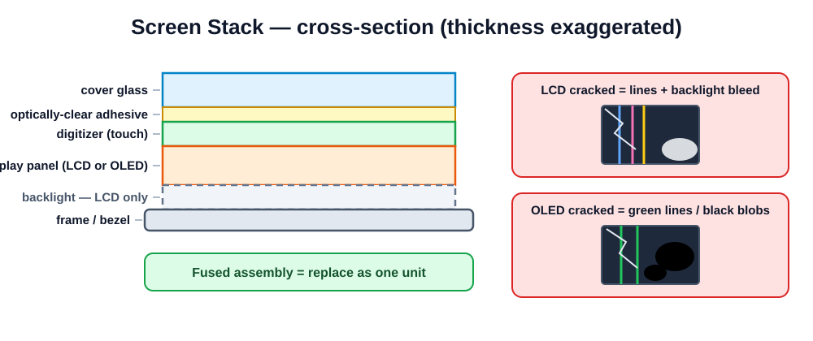

The money repair — done to a professional standard.
1.5 h theory · 3 h practical · quiz
Safety recital, collect the Module 3 mistake-prevention homework sentences. Hook: "Raise your hand if you've ever paid for a screen repair — or walked around with a cracked one." Almost every hand goes up. That's the market.
Master this module and you can already earn. Everything else in the course multiplies it.
Put local numbers on it: typical screen job price in your market, part cost, minutes of labor — work out the margin on the whiteboard. Then the flip side: a botched screen job (dust, lifted corner, dead proximity sensor) is also the #1 source of bad reviews. Standard matters more than speed.
Point out that Module 3 already taught 80% of the hands: opening, battery-first, connectors. Today adds the screen-specific 20%: the stack, part quality, adhesive, and the test protocol. The protocol is the graded core of the practical.

Map faults to layers: cracked but everything works = glass only. Touch dead, image fine = digitizer. Image broken = panel. Ask the class to diagnose: "Spiderweb cracks, picture perfect, touch works — which layer?" This layer-thinking drives the fused-vs-glass-only discussion two slides from now.
| LCD | OLED | |
|---|---|---|
| How it lights up | Backlight shines through liquid crystals | Each pixel emits its own light |
| Found in | Budget & older phones | Most flagships & mid-range |
| Failure looks like | Lines, backlight bleed, dim/dark screen | Green/pink lines, spreading black blobs |
| Handling | Fairly tough | Fragile — pressure & bends kill it |
Show real failure photos (or dead donor screens): LCD backlight bleed vs OLED black blob that grows over days. Diagnostic tell: perfect blacks and screen visibly off = OLED; faint glow on black = LCD backlight. Handling consequence: OLED replacements need gentler prying and no pressure on the panel face.
Glass + digitizer + panel laminated into one part. Cracked glass = replace the whole assembly. This is what we do.
Separating and re-laminating just the glass. Needs freezer/wire separators, OCA lamination, bubble-free machines. Specialist work — not this course.
Preempt the inevitable question "why replace a whole screen for one cracked layer?" — lamination removes air gaps for better image and thinner phones, but makes layers inseparable without factory-grade equipment. Refurb shops buy your cracked originals — that's why broken screens have resale value. Never throw a cracked original away; that's money.
| Tier | What it is | Price | Quality |
|---|---|---|---|
| Original (OEM) | Same part the factory fits | $$$$ | Perfect |
| Pulled original | OEM taken from a dead phone | $$$ | Great, but used — inspect! |
| Refurbished | Original panel, new glass laminated | $$$ | Very good if done well |
| Aftermarket | Third-party: incell LCD · hard OLED · soft OLED | $–$$ | Ranges from rough to near-original |
Explain the aftermarket sub-tiers: incell = LCD imitating an OLED phone's screen (cheapest, thicker, weaker colors, battery hit); hard OLED = real OLED on rigid glass (good, less drop-resistant); soft OLED = flexible like original (best aftermarket). Rule of thumb: price difference between tiers is real — a $15 screen looks like a $15 screen.
resources/videos.mdRole-play a 60-second customer quote: "I can do original at X with 6-month warranty, or good aftermarket at Y with 3-month." Ask why the honest shop wins long-term (referrals, no comeback disputes). After the video, ask which tier the class could personally spot in a blind test — usually incell brightness and color shift.
Open slowly to ~45° like a book — the display flexes are short. Battery disconnect the moment you're in.
This is Module 3's opening sequence applied to its hardest case — cracked glass grips picks and sheds shards. Tip: packing tape over spiderwebbed glass keeps the suction cup working and shards contained. Safety glasses mandatory today (Module 1 rule 3). Demo the 45° book-opening angle and show how short the display flexes really are.
resources/videos.mdPause at the shallow-pick corners and ask what lives under them on this model (usually display flex bottom-left, front camera top). Second pause at adhesive cleanup — beginners always underestimate this step; the video shows how long full cleanup actually takes.
Screen-with-frame costs a little more and takes a full teardown — but the result is factory-straight and beginner-safe. Quote it that way.
Contrast the two philosophies: iPhone-style = screen off first, quick; frame-mounted Android = full teardown into a new frame, longer but very controlled — and it's exactly the Module 3 teardown they already did. Show both replacement parts side by side: bare screen vs screen-in-frame.
resources/videos.mdHave students count teardown steps they already performed last session — usually all but two. Confidence builder: "You already know 90% of this repair." Note the transfer list as it appears; the next slide formalizes it.
Forget the sensor bracket and the proximity sensor misfires: the screen stays black during calls or dials with the customer's cheek. A 2 mm part causes a "faulty screen" complaint.
Lay old and new screens side by side and play spot-the-difference — everything on the old one that's missing from the new one transfers. Cheap aftermarket screens ship barest; originals often include more. Transfer with tweezers, seat parts in their exact recess — the proximity bracket especially has one correct position.
First: remove all old adhesive and clean the frame with IPA. New glue on old glue = a screen that lifts at the corner in a week.
Demo adhesive cleanup on a frame: spudger to lift the bulk, IPA-soaked wipe until the finger-drag test feels squeaky clean. Show a pre-cut kit aligned on the frame — one shot, no repositioning. B-7000 demo: rice-grain-thin bead; too much oozes into the earpiece. Note: water resistance is never fully restored — tell customers that, it goes in the Module 10 intake script.
All five pass → seal. Any fail → fix now, while it's open. This protocol is graded line-by-line today.
Demo the whole protocol in under 3 minutes on a working phone — speed sells the habit. Use a tester app or solid-color images for pixels. This is Module 3's "closing an untested phone means opening it twice," now as a formal checklist. In the practical, students literally tick each line on the worksheet with a trainer initial.
None of this means a bad repair — but the customer hears it from you, up front, never discovers it after.
Show the settings warning banner on a repaired iPhone if you have one. Script for intake: "Your phone will show a non-genuine display notice and lose True Tone — the screen will work perfectly. OK to proceed?" Get agreement BEFORE the repair, ideally in writing on the job sheet. Mention screen programmers exist to transfer the data — an advanced-shop tool, not required here.
| Symptom | Cause | Prevention |
|---|---|---|
| Dust specks under glass | Dirty bench / no camera-window wipe | Clean area, wipe just before seating |
| No backlight after repair | Torn backlight flex / battery connected during work | Battery first; gentle near flexes |
| Lines on display | Half-seated connector | Press till it clicks; re-check at test step |
Every failure here is a protocol violation, not bad luck — walk each row back to its rule (clean bench, battery-first, click-check). Lines that appear then vanish when you press the connector area = classic half-seat; reseat, don't replace. Dust is the most common comeback; it's pure discipline.
Class: listen for anything missed — you're the reviewers.
The protocol teach-back must hit all five checks in order — class counts on fingers. For the sales role-play, have the "customer" push back ("why so expensive?") and see if the volunteer holds the honest line without trash-talking cheap parts. Both skills are graded in the final practical.
| Stage | Task | Graded on |
|---|---|---|
| 1 | Guide lookup → remove broken screen from powered donor | Safe opening, battery first, no new damage |
| 2 | Transfer parts → fit new screen → connect | All transfers present & seated |
| 3 | Run full test protocol before sealing | All 5 checks ticked, trainer initialed |
| 4 | Adhesive application → final seal → QC & bench clean | Clean edges, no lift, no dust — rubric graded |
Worksheet: practicals/practical-04-screen-replacement.md
Use powered donors so the test protocol is real — a screen job on a dead phone teaches nothing about testing. Stage 3 requires your initials before any adhesive is opened. Rubric weighting suggestion: 30% safe removal, 20% transfers, 30% protocol, 20% final QC. Keep one deliberately dusty bench as a teachable moment if someone skips the wipe-down.
Next: Module 5 — batteries and power problems.
Quiz from assessments/module-quizzes.md; bench inspections during. The price-check homework feeds directly into Module 10 (parts sourcing) — collect the numbers next session and build a class price sheet from them. One-line preview of Module 5: "The part most likely to be lied about by the phone itself."